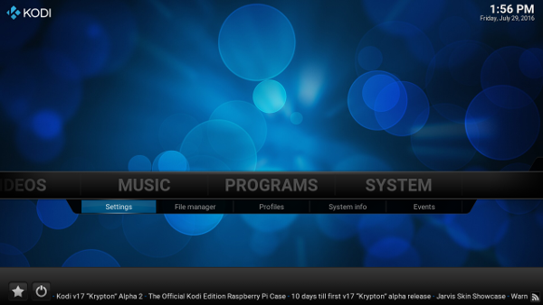

Das Problem mit Stahlbeton und DVB-T
Leider sind unsere Wände zu stark und die Fenster auch zu gut isoliert, als das DVB-T per Zimemrantenne vernünfig zu empfangen wäre. Also musste eine andere Lösung her. Einen Raspberry Pi mit einem DVB-T Stick unter dem Dach als Programmverteiler zu nutzen war der erste Ansatz. Dieser löste sich aber nach gut einer Woche in Wohlgefallen auf, da der Raspberry Piandauernd den DVB-T Stick verlor. Die Alternative war KODI. Auf vielen Geräten mit ARM® Architektur ausführbar. Sogar auf Handy's und Tablets.
Von Jörg Neikes am 29.07.2016 veröffentlicht.KODI is a registered trademark of the XBMC Foundation. This Logo is a unregistered trademark Logo of the XBMC Foundation.https://kodi.wiki/view/Official:List_of_Foundation_Trademarks
Um Änderungen an KODI vor zu nehmen geht bitte auf "Settings" im Systembereich.
Wählt dort TV aus.
Setzt TV auf "enabled".
Danach erscheint kurz ein Hinweis, das kein Client installiert ist, und ihr findet euch im PVR Client Menü wieder.
Wählt hier bitte den "IPTV Simple Client" aus.
Geht zum "Enable" Button.
Der "Enable" Button ist nun zu einem "Disable" Butto geworden, also ist die Installation vorgemerkt.
In dem General Reiter muss nun http://wownet.ro/iptv/ eingetragen werden.
In dem EPG Reiter kann nun http://wownet.ro/epg/ eingetragen werden.
In dem Logos Reiter kann nun http://wownet.ro/logo/ eingetragen werden
Nun noch mit "OK" unten links bestätigen, sonnst sind alle Angaben wieder gelöscht.
Nach dem einstellen am besten KODI schließen und wieder öffnen. Hier sieht man, wie die Software die EPG Daten holt.
Zum TV sehen muss nun natürlich entweder auf "TV", oder "Channels" geklickt werden. Der Reiter ist weiter links nach dem KODI start.

Hier sieht man nun einen Auschnitt aus der Senderliste.
Hier habe ich mal auf einen Kanal gedrückt. Wenn man Vollbild haben möchte reicht 2 mal der zurúck Button.